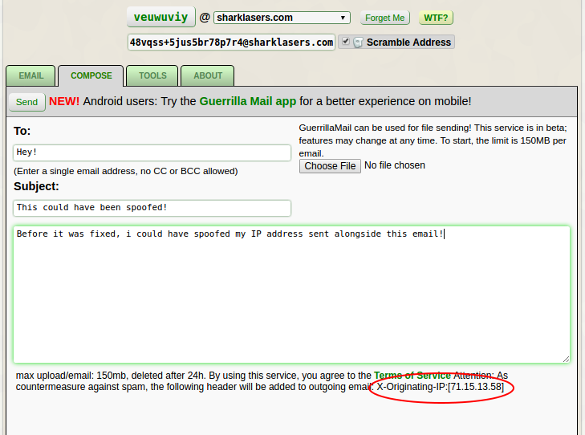

Do Not Trust X Forwarded For
What Is X-Forwarded-For?
X-Forwarded-For and similar headers are not official, but they are the de-facto standard client HTTP request header for non-transparent proxies. It is usually sent in HTTP requests.
The Problem
Since X-Forwarded-For is just an HTTP header, it can very easily be spoofed with browser addons.
This means that when developing an application, X-Forwarded-For should not be taken as ‘proof’ of a user’s IP address in any circumstance, and should not be trusted.
Example of Inappopriate Use
guerrillamail.com was using X-Forwarded-For by setting a sent email’s “X-Originating-IP” as the X-Forwarded-For. This allowed me to make an email appear as if it was coming from any IP address I wanted.

This could have been used to frame other people for crimes such as bomb threats, in fact if the Harvard student that used GM to send a bomb threat would have done that, someone else could have been falsely accused.
I reported this vulnerability almost 2 months ago, and it was quickly fixed.